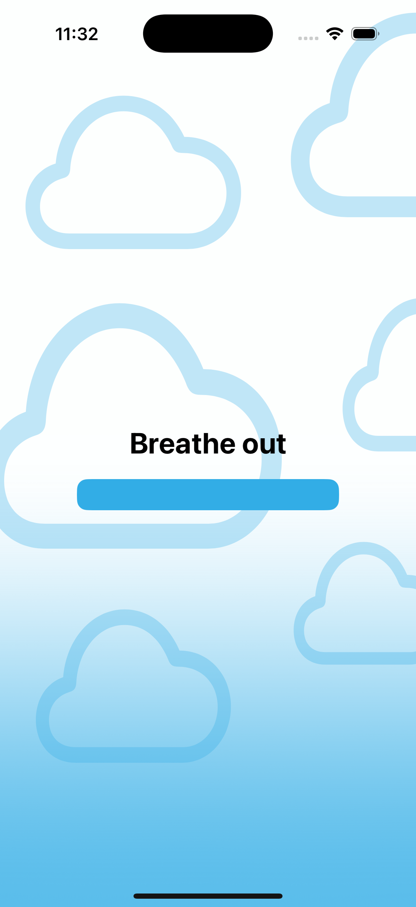
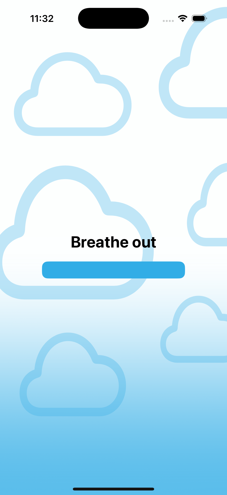
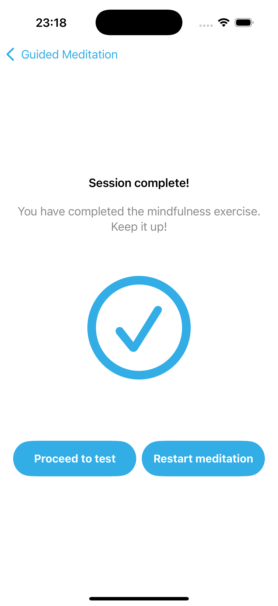
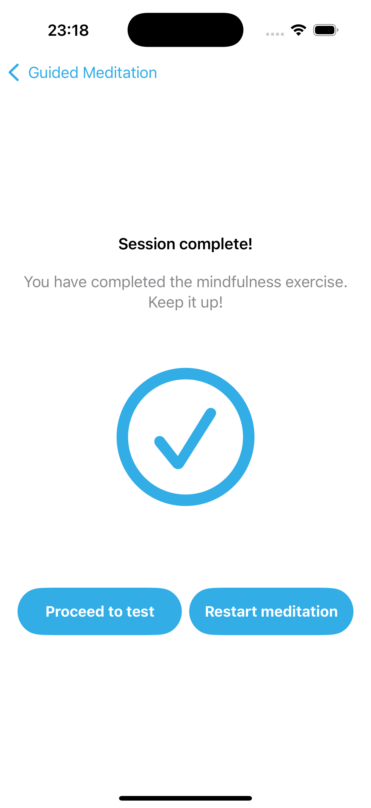
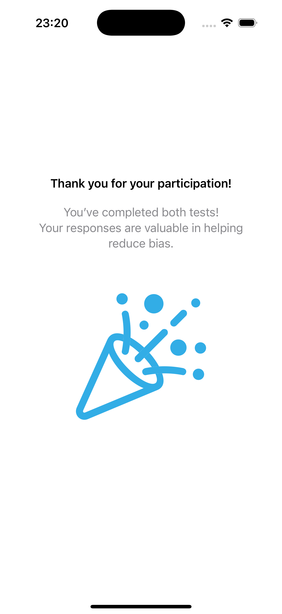
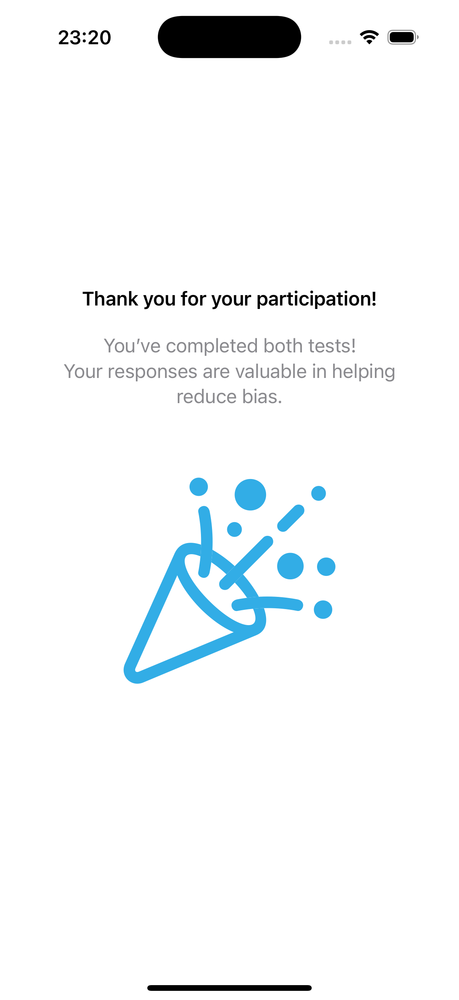

Projects
JoyRide - Autonomous Driving Companion App
JoyRide integrates various existing systems into a single app, combining navigation, chat, weather updates, and games. All functionalities are enhanced with a gamification aspect, providing drivers with relevant information while ensuring an enjoyable, entertaining ride.
I personally contributed to the quiz feature, where users can choose between singleplayer and multiplayer game modes. In the singleplayer mode, users answer a series of questions, with a progress bar indicating correct and incorrect answers. For multiplayer, drivers can compete against each other with real-time questions, displaying their answers and comparing scores on a session-wide leaderboard. Additionally, I worked on integrating the OpenAI API to generate localized questions based on the driver’s destination in singleplayer mode and the current location in multiplayer mode. I also designed and implemented several key screens, including the quiz selection, question number setup, and leaderboard screens in multiplayer mode.
AURA - iOS Multiplayer Social Deduction Game
I coached a team of six students in developing an iOS app for Serapion GmbH, a multiplayer social deduction game inspired by 'Werewolf,' integrating both human and AI players powered by LLMs.

Mindshift - Gender Bias Intervention App
I’m working on an iOS app with two students to assess and reduce gender bias through mindfulness and metacognition interventions. The app measures bias before and after the intervention and provides feedback to participants, helping analyze the effectiveness of these methods.
I focused on the meditation feature, incorporating AI-generated meditation text and audio. Additionally, I designed and implemented the welcome and final screens, data collection onboarding and transition screens, the breathing exercise with animated clouds, and the meditation session audio player and completion screens.

 

 

 
